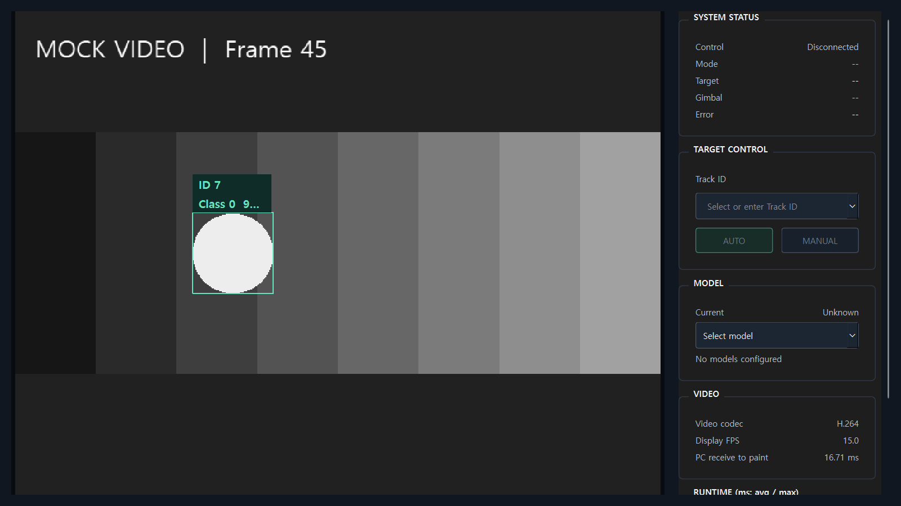

윤오름
팀장PM · 시스템 통합
PC GUI · 통신
짐벌 제어 · 통합 시험
.png)
LWIR OBJECT DETECTION & TRACKING
열화상으로 찾고,
선택한 표적을 따라가다.
팀원윤오름 · 김재남 · 윤관 · 정하건 · 홍정호
멘토천준호 선임연구원
TEAM 05 · OWL
열영상으로 찾고,
선택한 표적을 따라가는 시스템을 만듭니다.
PM · 시스템 통합
PC GUI · 통신
짐벌 제어 · 통합 시험
Runtime 개발
실시간 처리 파이프라인
모델 · 트래커 관리

AI 검출 모델
검출 모델 선정 · 학습
데이터 · 정확도 평가

객체 추적
추적 알고리즘 · 옵션 개선
추적 성능 평가
 사진 임시 대체
사진 임시 대체NPU 최적화
모델 경량화 · 양자화
NPU 배포
PROJECT OBJECTIVE
열화상 속 객체를 찾고,
선택한 표적을 화면 중심으로 추종합니다.
카메라 영상에서 객체의
위치와 종류를 인식
PC 화면에서 사용자가
추적할 객체를 지정
같은 표적의 ID를 유지하고
중심 오차에 따라 짐벌 구동
사용자는 표적을 지정하고, 시스템은 검출·추적 결과를 제어 명령으로 연결합니다.
도식은 운용 개념을 표현SYSTEM REQUIREMENTS
열영상 입력부터 표적 추종·상태 확인까지, 시스템이 충족해야 할 기준입니다.
| 구분 | 요구사항 | 목표 · 확인 기준 |
|---|---|---|
| R1실시간 처리 | 30Hz 입력 영상의 한 프레임 처리를 약 33.3ms 이내에 완료해야 한다. | 프레임 처리시간 ≤ 33.3ms |
| R2객체 검출 | 지정된 거리 범위 안에서 대상 객체를 검출할 수 있어야 한다. | 최소 · 최대 거리 [기준 확정 필요] m |
| R3객체 추적 | 검출된 동일 객체의 ID를 유지하며 정해진 기준 이상으로 추적을 유지해야 한다. | 최소 유지 시간 · 유지율 [기준 확정 필요] |
| R4짐벌 추종 | 사용자가 추적 명령을 내린 객체를 2축 짐벌 제어로 추종해야 한다. | 선택 표적의 Pan · Tilt 추종 |
| R5PC 운용 | PC GUI에서 영상과 추적 결과, 현재 시스템 상태를 확인할 수 있어야 한다. | 영상 · 표적 · 운용 상태 표시 |
SYSTEM ARCHITECTURE
보드는 검출·추적·구동을, PC는 표적 선택과 운용 상태 확인을 담당합니다.
640 × 480
열영상 입력
표적 검증 · 제어 계산 · 장치 명령 · 상태 관리
USB Serial
방향 · 속도 · 정지
영상·결과·운용 명령을
서로 다른 경로로 전달
영상·BBox 표시
표적 선택 · 수동 조작
모델 전환 · 상태 확인
TARGET SELECTION & GIMBAL CONTROL
선택 표적의 중심 오차를 줄이고, 입력 상실과 수동 개입에는 정지합니다.
선택 ID의 최신 BBox에서
화면 중심과의 오차를 계산
축별 방향과 공통 SPD 결정
Deadband · 속도 상한 · 변화율 제한
AUTO와 수동 명령을 직렬화하고
정지 시 이전 자동 명령을 무효화
REAL-TIME PIPELINE & VIDEO TRANSPORT
처리와 송신을 분리하고, 최신 결과와 동일 프레임의 영상을 전달합니다.
원본 프레임
생성·전달
비동기 추론
검출 결과
객체 ID와
원본 프레임 공유
영상 + 메타데이터
최신 결과 → 제어
| 항목 | JPEG | H.264 |
|---|---|---|
| 하드웨어 인코더 | mppjpegenc | mpph264enc |
| CPU · 표시 FPS | [측정 예정] | [측정 예정] |
| Encode+RTP · 수신량 | [측정 예정] | [측정 예정] |
지원 여부와 실제 성능 우열은 구분합니다.
PC APPLICATION & COMMUNICATION
영상과 검출 결과를 대응시키고, 운용 요청을 보드 상태와 연결했습니다.

RTP timestamp가 대응하는
박스만 해당 영상에 표시
Track ID 선택 · AUTO/MANUAL
방향키 입력과 해제 처리
요청 접수와 완료를 구분
교체 중 조작 잠금
STATUS로 상태 갱신
단절·재접속 시 입력 초기화
VERIFICATION & PERFORMANCE
기능·통신 검증에서 실물 통합까지, 확인한 범위를 구분해 기록했습니다.
| 시험 범위 | 확인한 내용과 근거 |
|---|---|
| PC 기능·통신 | 영상·BBox·TCP·CSV 시험모의 송신기 / 11월 2일 최종 기록: 개별 시험 100개 통과 |
| Runtime 통합 | CPU CTest 30 / 30 통과PR #10 · 666d1bf 기준 / 하드웨어 검증과 구분 |
| 통계 수신·기록 | 중복 제거·누적 통계·세대 초기화PC PR #5 · 합성 fixture 시험 / 보드 실측 아님 |
| 실물 추종 튜닝 | 진동 관찰 후 P 이득·속도 설정 조정Runtime PR #14 / 최종 안정성·정지시간 정량 검증 필요 |
PC 수신→그리기와 보드 내부 구간은 별도로 해석하며, 전체 카메라→화면 지연과 구분합니다.